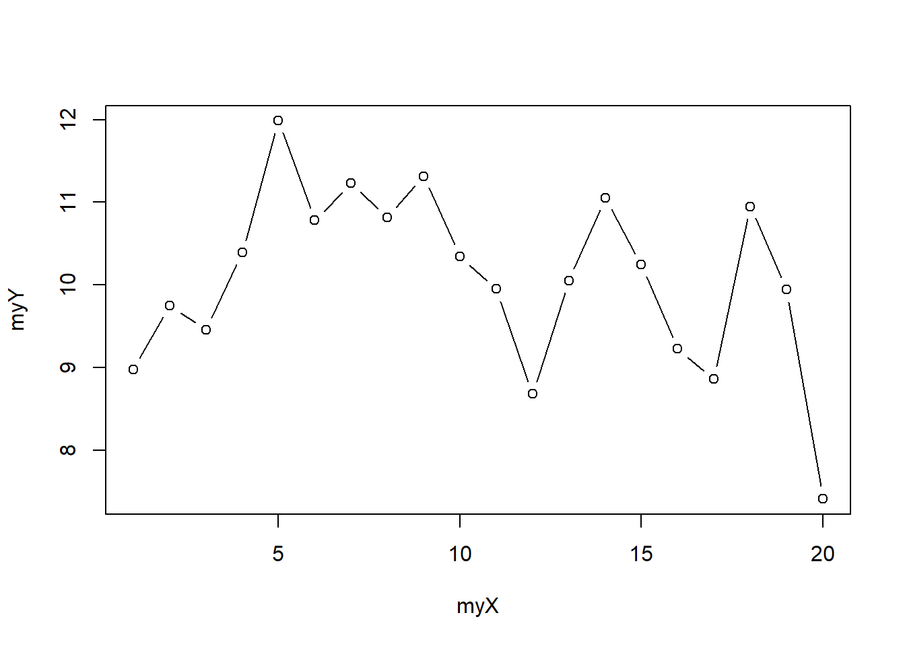
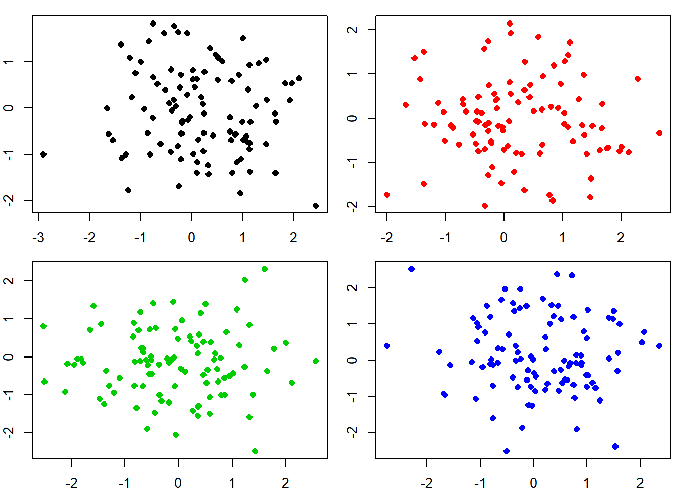
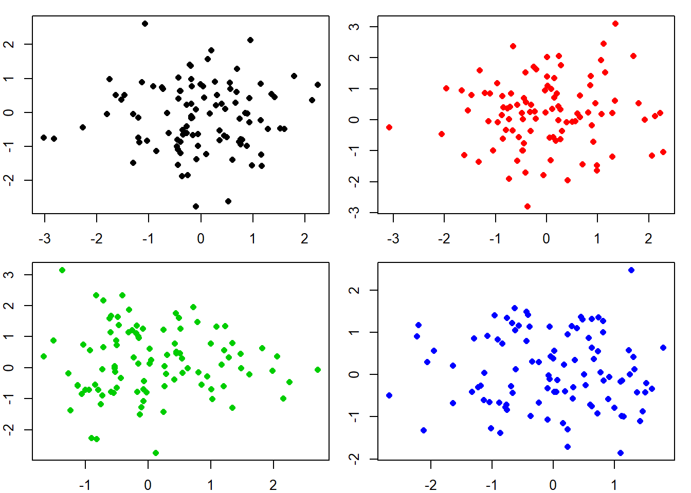
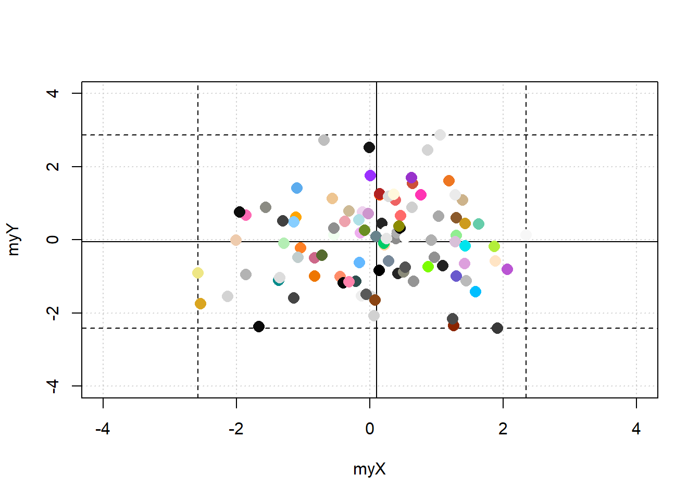
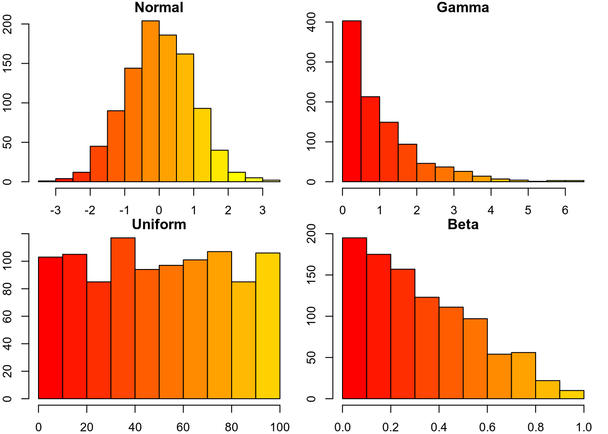
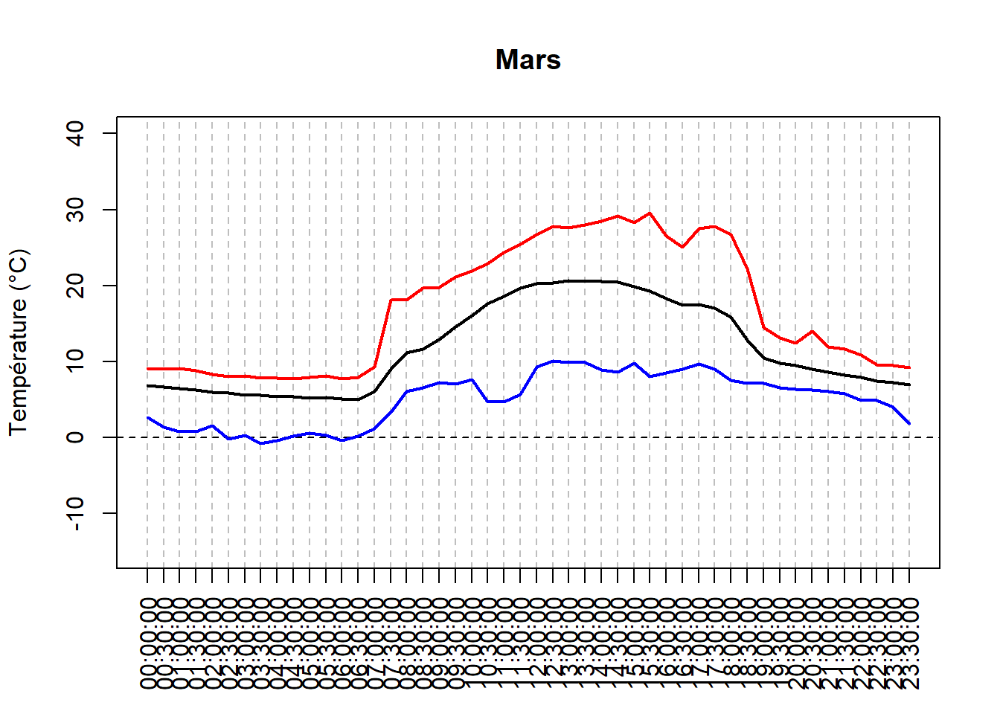
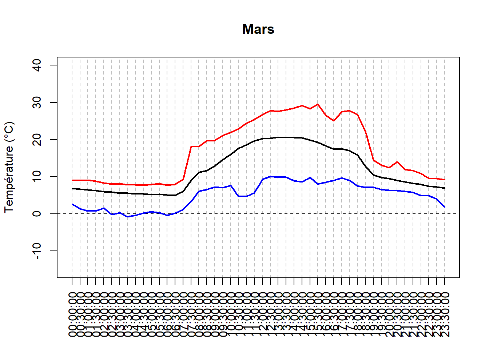
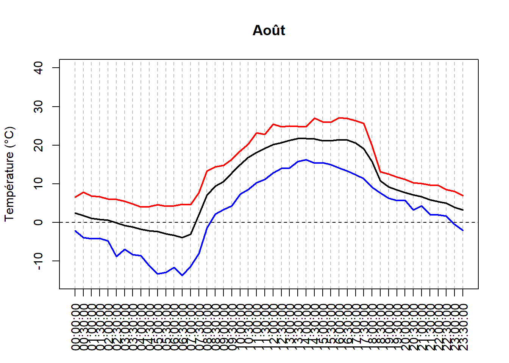
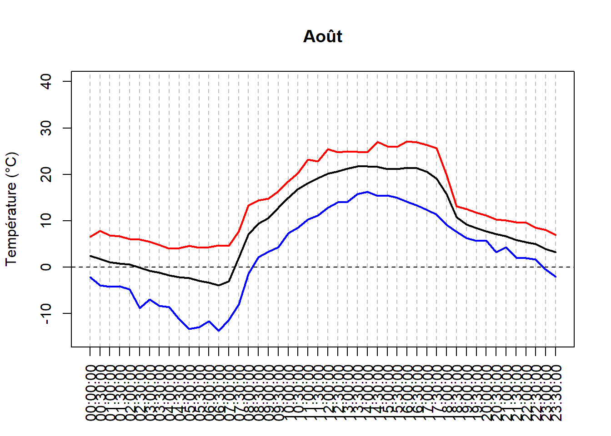
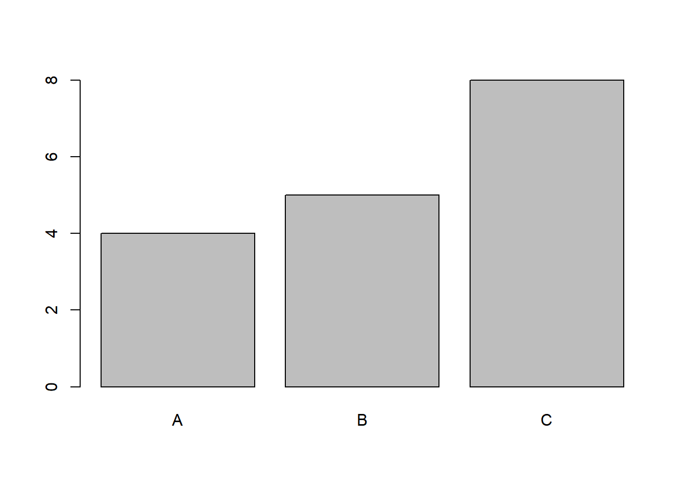

23 Analyser des données de datalogger de température
Dans les études de biologie, d’écologie ou d’agronomie, nous utilisons fréquemment des données de température provenant de dataloggers. Dans cette étude de cas, nous verrons comment analyser ces données en utilisant les données de température de l’altiplano bolivien près de la ville de El Alto. La première étape consiste à transformer les données du datalogger en un format facile à lire pour R. Nous utiliserons un fichier CSV et la fonction read.table(). Le fichier peut être téléchargé à partir du site Web du livre sur GitHub (https://github.com/frareb/myRBook_FR/blob/master/myFiles/E05C13.csv ; cliquez avec le bouton droit sur le lien et sélectionnez “Enregistrer la cible du lien sous…”).
bdd <- read.table("myFiles/E05C13.csv", skip = 1, header = TRUE,
sep = ",", dec = ".", stringsAsFactors = FALSE)
colnames(bdd) <- c("id", "date", "temp")
head(bdd)## id date temp
## 1 1 11/12/15 23:00:00 4.973
## 2 2 11/12/15 23:30:00 4.766
## 3 3 11/13/15 00:00:00 4.844
## 4 4 11/13/15 00:30:00 4.844
## 5 5 11/13/15 01:00:00 5.076
## 6 6 11/13/15 01:30:00 5.282tail(bdd)## id date temp
## 32781 32781 09/25/17 21:00:00 7.091
## 32782 32782 09/25/17 21:30:00 6.914
## 32783 32783 09/25/17 22:00:00 6.813
## 32784 32784 09/25/17 22:30:00 6.611
## 32785 32785 09/25/17 23:00:00 6.331
## 32786 32786 09/25/17 23:30:00 5.385str(bdd)## 'data.frame': 32786 obs. of 3 variables:
## $ id : int 1 2 3 4 5 6 7 8 9 10 ...
## $ date: chr "11/12/15 23:00:00" "11/12/15 23:30:00" "11/13/15 00:00:00" "11/13/15 00:30:00" ...
## $ temp: num 4.97 4.77 4.84 4.84 5.08 ...Nous pouvons voir que la date est au format character et qu’elle contient la date avec le mois, le jour et l’année séparés par /, puis vient un espace et l’heure avec des heures de 0 à 24, minutes et secondes, séparés par : (exemple: 11/12/15 23:00:00 pour le 12 novembre 2015 à 11 heures du soir). Nous allons séparer les informations en plusieurs objets. Séparons d’abord la date de l’heure. Pour cela, nous utiliserons la fonction strsplit() en utilisant l’espace entre la date et l’heure comme séparateur.
strsplit("11/12/15 23:00:00", split = " ")## [[1]]
## [1] "11/12/15" "23:00:00"Comme l’indiquent les doubles crochets, la fonction strsplit() renvoie un objet au format list. Nous voulons le vecteur qui correspond au premier élément de la liste, donc nous allons ajouter [[1]].
strsplit("11/12/15 23:00:00", split = " ")[[1]]## [1] "11/12/15" "23:00:00"Le premier élément du vector est la date. Pour avoir toutes les dates, nous allons faire une boucle avec la fonction sapply().
bddDay <- sapply(strsplit(bdd[, 2], split = " "), "[[", 1)
head(bddDay)## [1] "11/12/15" "11/12/15" "11/13/15" "11/13/15" "11/13/15" "11/13/15"Ensuite, nous aurons besoin des dates dans le format factor (fonction aggregate() pour obtenir les informations par jour). Nous devons donc transformer l’objet dans le format factor avec la fonction as.factor().
bddDay <- as.factor(sapply(strsplit(bdd[, 2], split = " "), "[[", 1))
head(bddDay)## [1] 11/12/15 11/12/15 11/13/15 11/13/15 11/13/15 11/13/15
## 684 Levels: 01/01/16 01/01/17 01/02/16 01/02/17 01/03/16 ... 12/31/16En effectuant la transformation vers le format factor, les différents facteurs de notre objet sont classés par ordre alphabétique comme si les dates correspondaient à du simple texte. C’est problématique car l’ordre des facteurs doit correspondre à l’ordre des dates. Pour cela, nous allons créer un vector avec toutes les dates uniques avec la fonction unique(), puis trier les dates avec la fonction sort.list() en utilisant les dates avec la fonction as.POSIXct(). Le résultat sera l’objet lev. Nous allons utiliser le vecteur lev pour spécifier comment les facteurs de nos dates devraient être classées. Le travail avec les dates est souvent fastidieux, c’est pourquoi il existe des packages spécialisés dans leur gestion. Ici nous avons préféré utiliser les fonctions de base de R dans un objectif pédagogique.
bddDay <- as.factor(sapply(strsplit(bdd[, 2], split = " "), "[[", 1))
udate <- unique(bddDay)
lev <- udate[sort.list(as.POSIXct(strptime(udate, "%m/%d/%y")))]
bddDay <- factor(bddDay, levels = lev)
head(bddDay)## [1] 11/12/15 11/12/15 11/13/15 11/13/15 11/13/15 11/13/15
## 684 Levels: 11/12/15 11/13/15 11/14/15 11/15/15 11/16/15 ... 09/25/17Maintenant, nous pouvons ajouter les dates comme nouvelle colonne de l’objet bdd et faire la même chose pour les heures (il n’est pas nécessaire de réorganiser les niveaux de l’haure car l’ordre par défaut correspond à ce que nous voulons).
bdd$bddDay <- bddDay
bdd$bddHour <- as.factor(sapply(strsplit(bdd[, 2], split = " "), "[[", 2))
head(bdd)## id date temp bddDay bddHour
## 1 1 11/12/15 23:00:00 4.973 11/12/15 23:00:00
## 2 2 11/12/15 23:30:00 4.766 11/12/15 23:30:00
## 3 3 11/13/15 00:00:00 4.844 11/13/15 00:00:00
## 4 4 11/13/15 00:30:00 4.844 11/13/15 00:30:00
## 5 5 11/13/15 01:00:00 5.076 11/13/15 01:00:00
## 6 6 11/13/15 01:30:00 5.282 11/13/15 01:30:00Nous pouvons visualiser les données avec la fonction plot(), en spécifiant le format des dates avec la fonction as.Date()
plot(x = as.Date(bdd$bddDay, format = "%m/%d/%y"), y = bdd$temp,
type = 'l', ylim = c(-15, 40),
xlab = "Temps", ylab = "Température (°C)")
Nous pouvons simplifier les informations en ne calculant que les températures minimales, moyennes et maximales avec la fonction aggregate().
tempDayMean <- aggregate(x = bdd[, 3], by = list(bdd[, 4]), FUN = mean)
tempDayMin <- aggregate(x = bdd[, 3], by = list(bdd[, 4]), FUN = min)
tempDayMax <- aggregate(x = bdd[, 3], by = list(bdd[, 4]), FUN = max)
plot(x = as.Date(tempDayMean[, 1], format = "%m/%d/%y"),
y = tempDayMean[, 2], type = 'l', ylim = c(-15, 40),
xlab = "Temps", ylab = "Température (°C)")
points(x = as.Date(tempDayMin[, 1], format = "%m/%d/%y"),
y = tempDayMin[, 2], type = 'l', col = 4)
points(x = as.Date(tempDayMax[, 1], format = "%m/%d/%y"),
y = tempDayMax[, 2], type = 'l', col = 2)
legend("topright", legend = c("min", "max", "mean"),
lty = 1, lwd = 2, col = c(4, 2, 1))
Nous pouvons également calculer la différence entre la température maximale et la température minimale (variation de la température diurne).
tempDayTR <- tempDayMax[, 2] - tempDayMin[, 2]
plot(x = as.Date(tempDayMean[, 1], format = "%m/%d/%y"),
y = tempDayTR, type = 'l', ylim = c(5, 45),
xlab = "Temps", ylab = "Variation de température diurne (°C)")
Une autre possibilité est de regrouper les données pour avoir la température moyenne des heures de la journée avec la fonction aggregate().
tempHourMean <- aggregate(x = bdd[, 3], by = list(bdd[, 5]), FUN = mean)
tempHourMin <- aggregate(x = bdd[, 3], by = list(bdd[, 5]), FUN = min)
tempHourMax <- aggregate(x = bdd[, 3], by = list(bdd[, 5]), FUN = max)
hours <- seq(from = 0, to = 23.5, by = 0.5)
plot(x = hours,
y = tempHourMean[, 2], type = 'l', ylim = c(-15, 40),
xlab = "", ylab = "Température (°C)", lwd = 2,
xaxt = "n", panel.first = {
abline(v = hours, col = "gray", lty = 2)
abline(h = 0, lty = 2)
})
axis(side = 1, at = hours, labels = tempHourMean[, 1], las = 2)
points(x = hours, y = tempHourMin[, 2], type = 'l', col = 4, lwd = 2)
points(x = hours, y = tempHourMax[, 2], type = 'l', col = 2, lwd = 2)
Nous pouvons également calculer les températures des heures de la journée pour chaque mois.
meses <- c("Janvier", "Février", "Mars", "Avril", "Mai", "Juin",
"Juillet", "Août", "Septembre", "Octobre", "Novembre", "Décembre")
hours <- seq(from = 0, to = 23.5, by = 0.5)
bddMonth <- sapply(strsplit(as.character(bdd$bddDay), split = "/"), "[[", 1)
tempDayEachMonth <- lapply(sort(unique(bddMonth)), function(myMonth){
bddX <- bdd[bddMonth == myMonth, ]
tempHourMean <- aggregate(x = bddX[, 3], by = list(bddX[, 5]), FUN = mean)
tempHourMin <- aggregate(x = bddX[, 3], by = list(bddX[, 5]), FUN = min)
tempHourMax <- aggregate(x = bddX[, 3], by = list(bddX[, 5]), FUN = max)
return(data.frame(tempHourMean, tempHourMin, tempHourMax))
})
for (i in seq_along(tempDayEachMonth)){
plot(x = hours, y = tempDayEachMonth[[i]][, 2],
type = 'l', ylim = c(-15, 40),
xlab = "", ylab = "Température (°C)", lwd = 2,
main = meses[i],
xaxt = "n", panel.first = {
abline(v = hours, col = "gray", lty = 2)
abline(h = 0, lty = 2)
})
axis(side = 1, at = hours, labels = tempHourMean[, 1], las = 2)
points(x = hours, y = tempDayEachMonth[[i]][, 4],
type = 'l', col = 4, lwd = 2)
points(x = hours, y = tempDayEachMonth[[i]][, 6],
type = 'l', col = 2, lwd = 2)
} 



 



Ou les regrouper dans un même graphique, ainsi que la variation diurne des températures pour chaque mois.
plot(x = hours, y = tempDayEachMonth[[1]][, 2], type = 'n', ylim = c(-10, 35),
xlab = "", ylab = "Température moyenne (°C)",
xaxt = "n",
panel.first = {
abline(v = hours, col = "gray", lty = 2)
abline(h = 0, lty = 2)
})
axis(side = 1, at = hours, labels = tempHourMean[, 1], las = 2)
myColors <- c("#A6CEE3", "#1F78B4", "#B2DF8A", "#33A02C", "#FB9A99",
"#E31A1C", "#FDBF6F", "#FF7F00", "#CAB2D6", "#6A3D9A", "#FFFF99",
"#B15928")
for (i in seq_along(tempDayEachMonth)){
points(x = hours,
y = tempDayEachMonth[[i]][, 2],
type = 'l', col = myColors[i], lwd = 2)
}
legend("topright", ncol = 4, legend = meses, col = myColors,
lty = 1, lwd = 2, cex = 0.8)
plot(x = hours, y = tempDayEachMonth[[1]][, 2], type = 'n', ylim = c(0, 30),
xlab = "", ylab = "Variation de température diurne (°C)",
xaxt = "n",
panel.first = {
abline(v = hours, col = "gray", lty = 2)
abline(h = 0, lty = 2)
})
axis(side = 1, at = hours, labels = tempHourMean[, 1], las = 2)
myColors <- c("#A6CEE3", "#1F78B4", "#B2DF8A", "#33A02C", "#FB9A99",
"#E31A1C", "#FDBF6F", "#FF7F00", "#CAB2D6", "#6A3D9A", "#FFFF99",
"#B15928")
for (i in seq_along(tempDayEachMonth)){
points(x = hours,
y = tempDayEachMonth[[i]][, 6] - tempDayEachMonth[[i]][, 4],
type = 'l', col = myColors[i], lwd = 2)
}
legend("topright", ncol = 4, legend = meses, col = myColors,
lty = 1, lwd = 2, cex = 0.8)